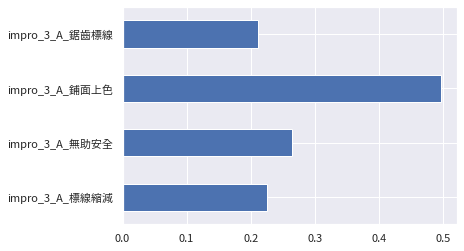
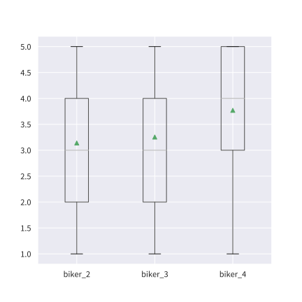

椰林大道交通改善問卷
所有樣本對於各改善措施的支持率

依交通工具分組對各改善措施的支持率
| 標線縮減 | 無助安全 | 鋪面上色 | 鋸齒標線 | |||||
|---|---|---|---|---|---|---|---|---|
| 支持率 | 人數 | 支持率 | 人數 | 支持率 | 人數 | 支持率 | 人數 | |
| 主要交通方式 | ||||||||
| 小客車 | 0.00% | 0 | 50.00% | 1 | 0.00% | 0 | 50.00% | 1 |
| 步行 | 23.53% | 8 | 26.47% | 9 | 55.88% | 19 | 20.59% | 7 |
| 滑板 | 0.00% | 0 | 0.00% | 0 | 100.00% | 1 | 100.00% | 1 |
| 自行車（含自有交通工具） | 23.16% | 44 | 26.32% | 50 | 48.95% | 93 | 20.00% | 38 |
| 電動平衡車／滑板車 | 0.00% | 0 | 33.33% | 1 | 33.33% | 1 | 33.33% | 1 |
| 電動輪椅 | 0.00% | 0 | 0.00% | 0 | 100.00% | 1 | 100.00% | 1 |
若僅保留步行與自行車騎士的填答資料：
| 標線縮減 | 無助安全 | 鋪面上色 | 鋸齒標線 | |||||
|---|---|---|---|---|---|---|---|---|
| 支持率 | 人數 | 支持率 | 人數 | 支持率 | 人數 | 支持率 | 人數 | |
| 主要交通方式 | ||||||||
| 步行 | 23.53% | 8 | 26.47% | 9 | 55.88% | 19 | 20.59% | 7 |
| 自行車（含自有交通工具） | 23.16% | 44 | 26.32% | 50 | 48.95% | 93 | 20.00% | 38 |

行人不喜歡使用人行道的原因

騎士騎乘椰林大道的感受
| 代碼 | 題目（請問您對於以下敘述的認同程度？） |
|---|---|
| biker_2 | 機動車輛的行駛路線經常變動，使我難以維持原有的騎乘路線 |
| biker_3 | 椰林大道上的機動車輛使我被迫加速 |
| biker_4 | 椰林大道上的機動車輛使我騎乘交通工具時感到危險 |

行人使用椰林大道的感受
| 代碼 | 題目（請問您對於以下敘述的認同程度？） |
|---|---|
| pedes_3 | 我必須要時時注意路況，才不會被自行車／機動車撞到 |
| pedes_4 | 我經常被突然竄出的自行車／機動車嚇到 |

用路人對椰林大道夜間狀況的評價
| 代碼 | 題目（請問您對於以下敘述的認同程度？） |
|---|---|
| night_1 | 目前椰林大道的夜間照明足夠讓我看清楚路上的來車 |
| night_2 | 目前椰林大道的夜間照明足夠讓我感到安心 |